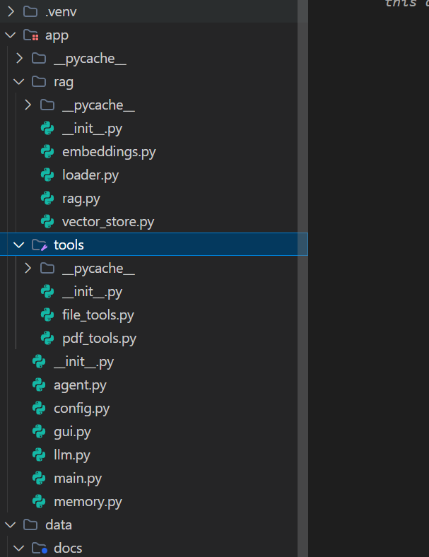
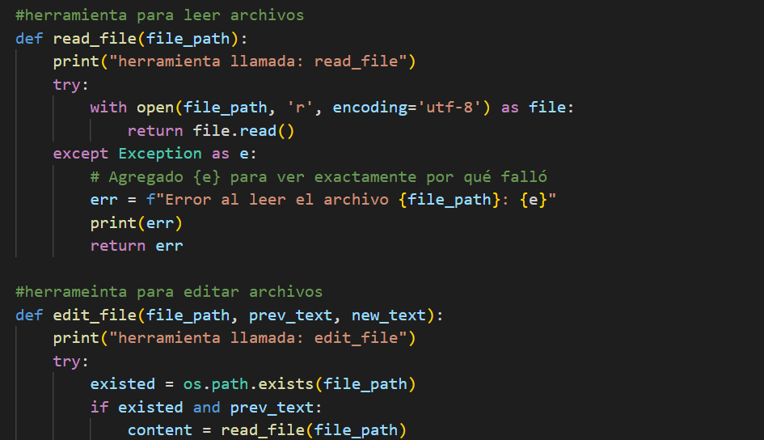
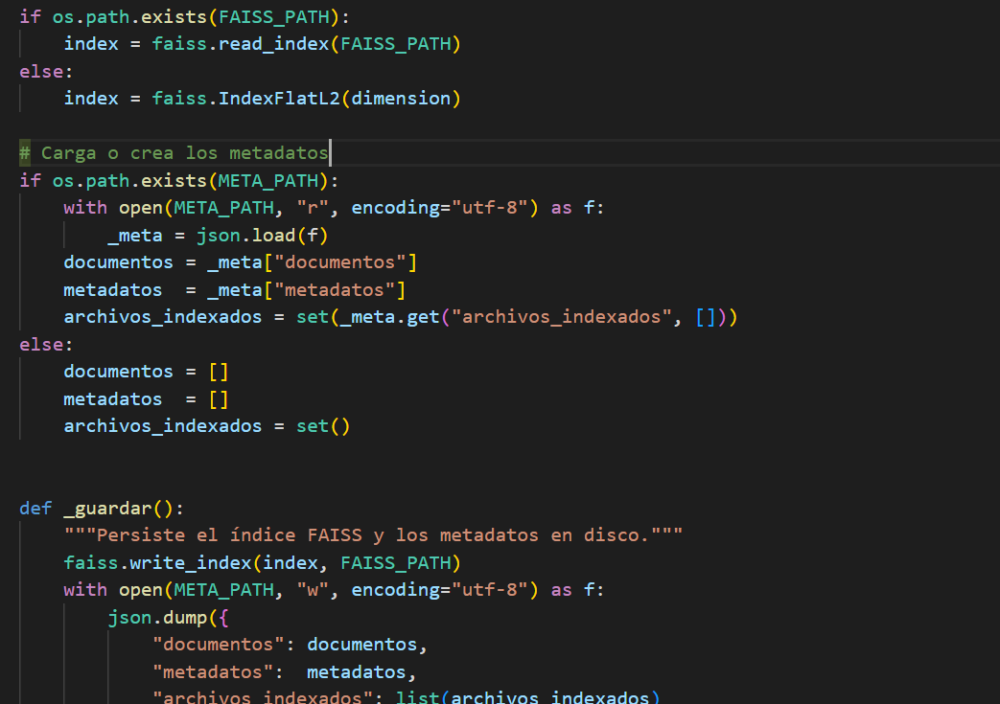
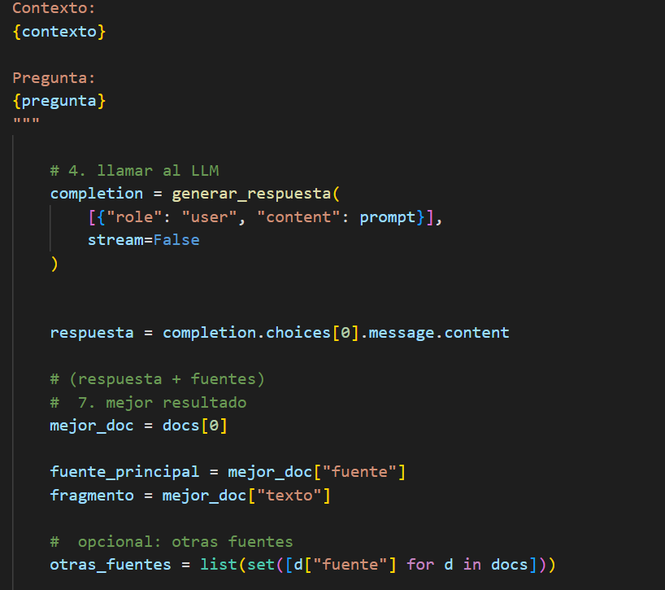
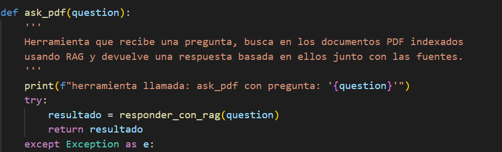
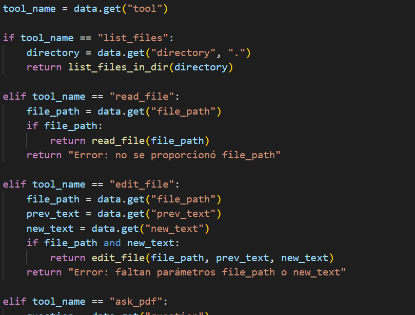
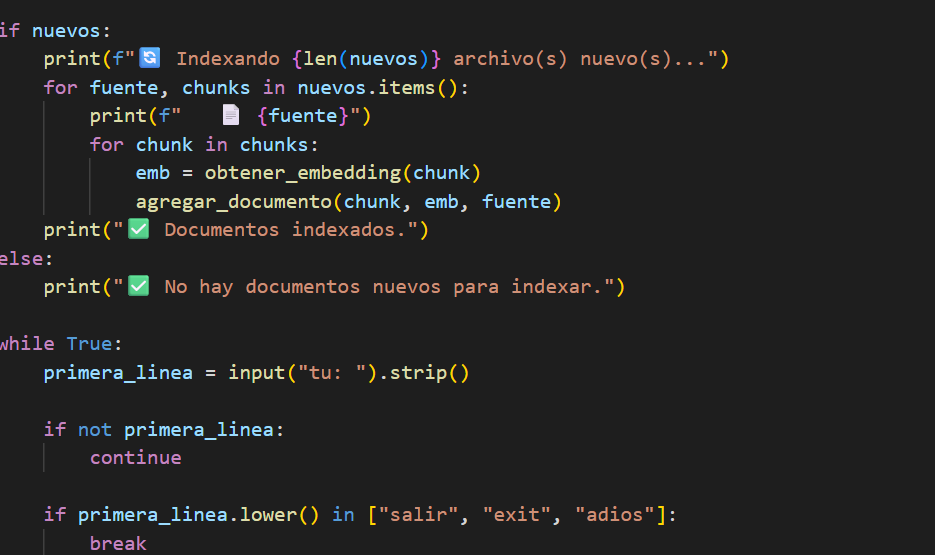
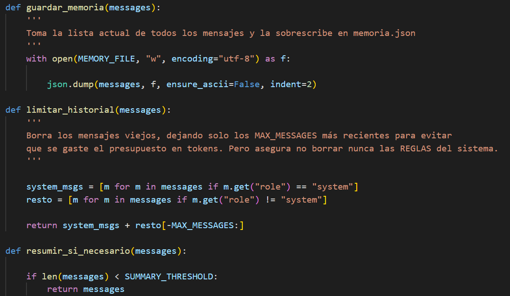
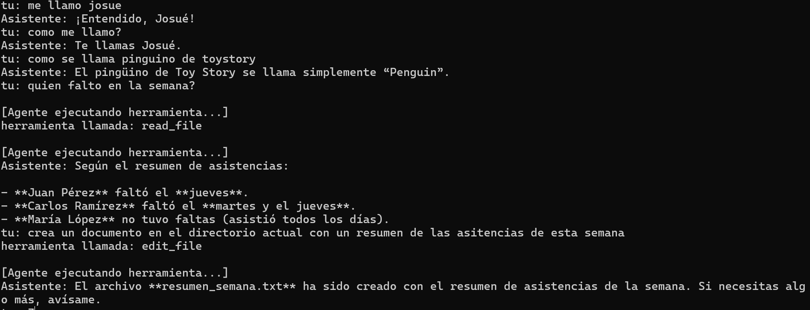
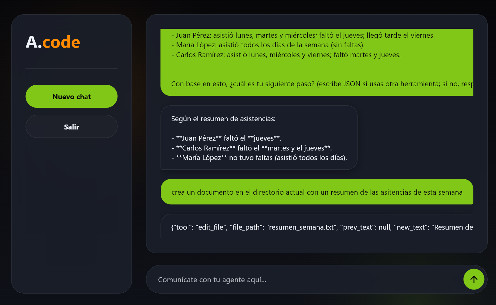

Proyecto
Agente de IA Multimodal para Análisis de Documentos y Automatización
Este proyecto integra y expande los desarrollos previos para construir un agente de inteligencia artificial capaz de:
- Responder preguntas generales
- Leer y analizar archivos PDF
- Buscar información relevante dentro de documentos
- Generar resúmenes automáticamente
- Crear y editar archivos de forma autónoma
El resultado es un sistema que combina procesamiento de lenguaje natural, búsqueda semántica (RAG) y ejecución de herramientas, acercándose a un asistente inteligente funcional.

🏗️ Arquitectura Modular
El sistema fue diseñado bajo una arquitectura modular, separando cada componente para lograr mayor claridad, escalabilidad y mantenimiento del código.

🔌 Integración de Herramientas (Tools)
Se desarrollaron e integraron herramientas personalizadas que permiten al agente:
- Leer archivos (incluyendo PDFs)
- Crear nuevos archivos
- Editar contenido existente
- Consultar información dentro de documentos
Además, se integró un sistema RAG para procesar y contextualizar la información extraída.

🧠 Procesamiento Semántico con RAG
El sistema implementa un pipeline completo de búsqueda semántica:
- División de textos en chunks
- Generación de embeddings por fragmento
- Filtrado de resultados mediante Top-K
- Uso de FAISS como base de datos vectorial
También se incorporan metadatos, permitiendo identificar las fuentes utilizadas en cada respuesta.

💡 Generación de Contexto Inteligente
El módulo RAG se encarga de:
- Convertir la pregunta en embedding
- Compararla contra la base vectorial
- Construir un contexto relevante
La respuesta generada incluye:
- Documentos consultados
- Fuente principal
- Fragmentos específicos utilizados
Esto permite respuestas más precisas y trazables.

🤝 Integración del Sistema en el Agente
Se encapsuló la lógica de RAG como una herramienta, permitiendo que el agente la utilice de forma dinámica según la intención del usuario.

🎯 Orquestación de Capacidades
El agente carga múltiples tools, incluyendo:
- Consulta de documentos (RAG)
- Creación de archivos
- Edición de contenido
Esto le permite tomar decisiones sobre qué acción ejecutar en cada momento.

💠 Control Central (Main)
El módulo principal se encarga de orquestar la interacción entre el usuario, el modelo y las herramientas, coordinando todo el flujo del sistema.

💾 Gestión de Memoria y Contexto
Para optimizar el rendimiento:
- Se implementó memoria local en formato JSON
- Se limitó el historial enviado al modelo
- Al superar el límite, el sistema genera automáticamente un resumen del contexto previo
Esto reduce el consumo de tokens sin perder coherencia en la conversación.

🏃 Comportamiento del Agente
El agente es capaz de:
- Mantener conversaciones naturales
- Identificar cuándo usar una herramienta
- Responder preguntas sobre documentos
- Generar nuevos archivos con contenido solicitado

💻 Interfaz Gráfica Generada por el Agente
Como resultado final, el propio agente desarrolló un frontend de escritorio para interactuar con el sistema de manera más intuitiva.